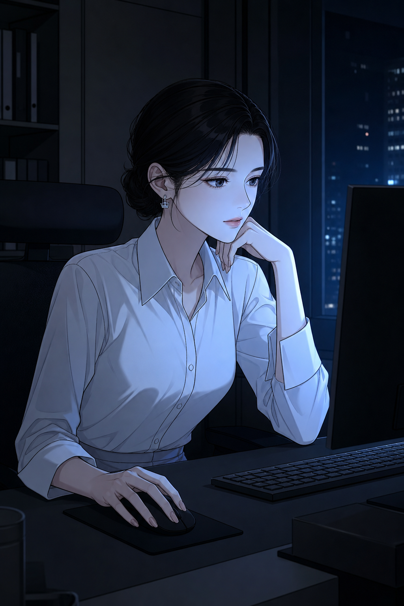
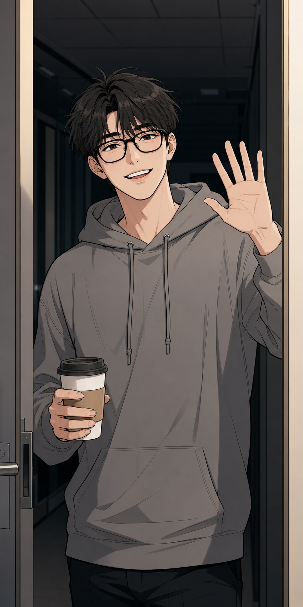
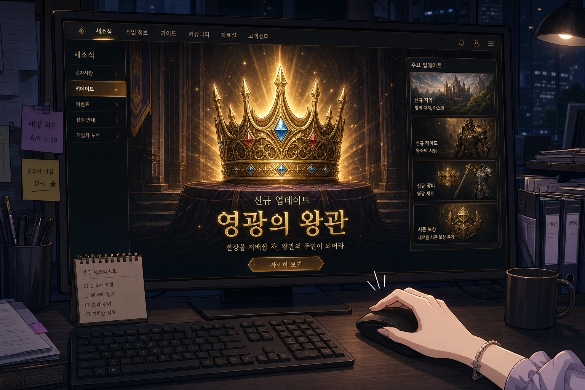
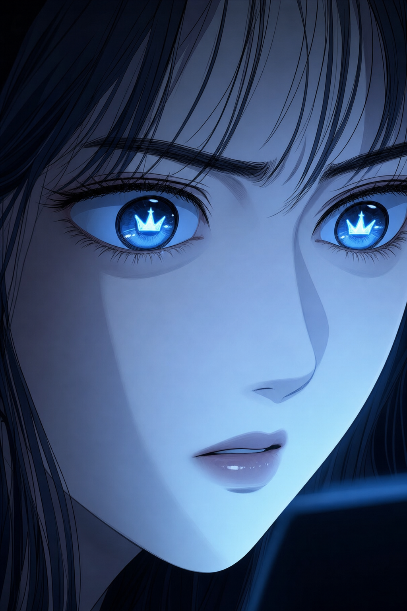
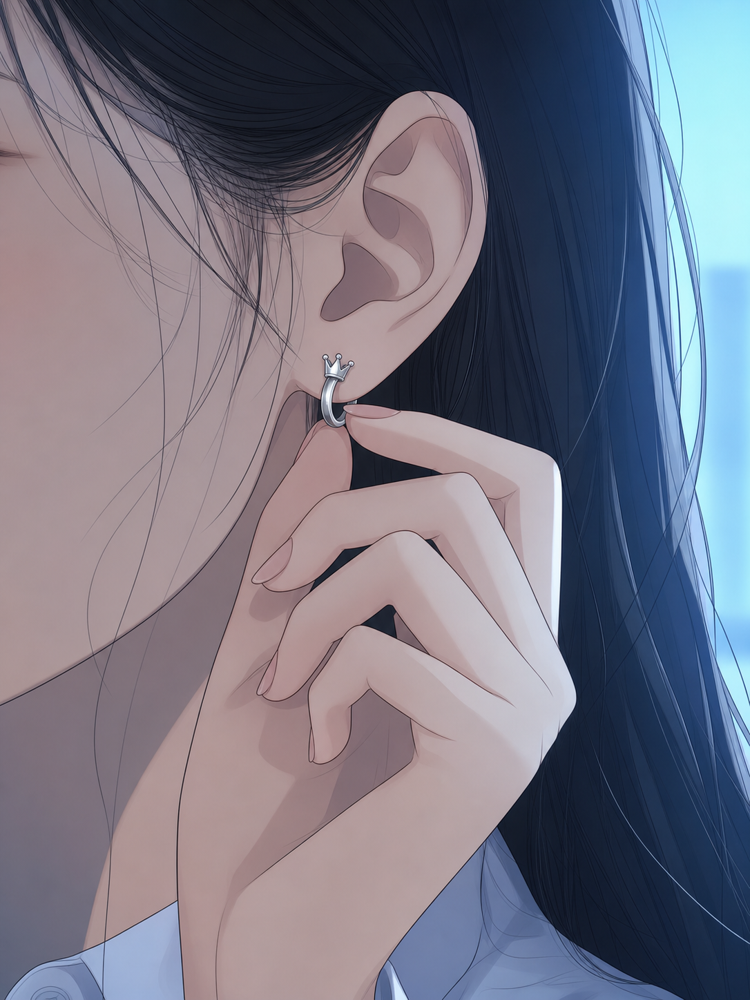
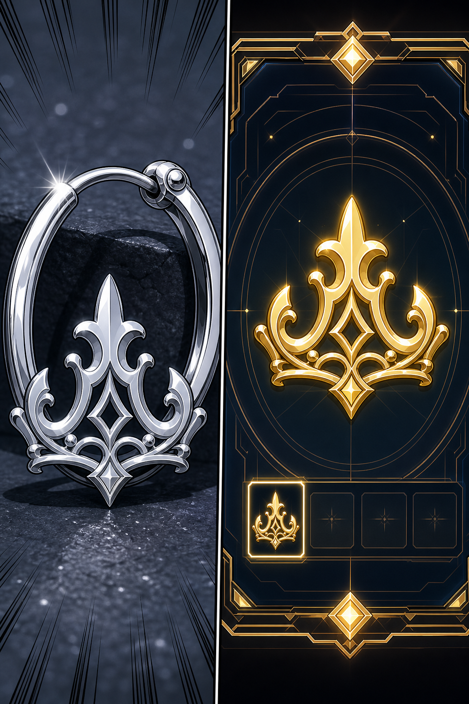
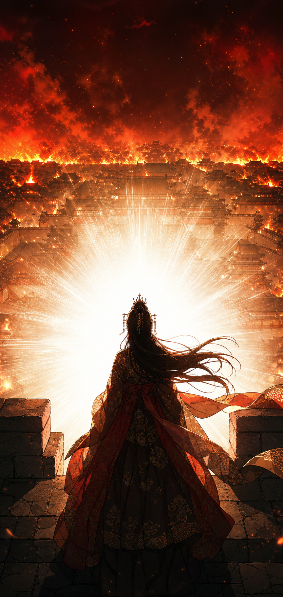
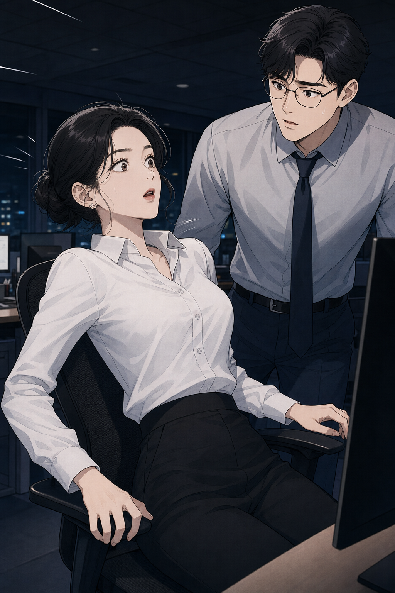
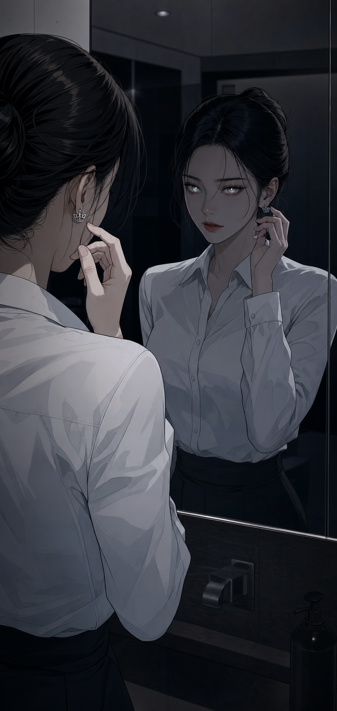

RF 온라인 서비스 9년차. 오늘도 서버는 돌아간다.
그리고 나도.

유저 아이디 정지 처리... 완료.
딸깍

진명 씨, 또 야근이에요? 커피 한 잔—
됐어요. 30분 안에 끝낼 거니까.

이번 업데이트 검수가 남았지.

...이건.

왜 자꾸...


—어디선가 본 적 있다.
우르르릉...

진명 씨? 왜 그래요, 갑자기.
...아무것도 아니에요. 눈이 좀 피로해서.

...이상하다.
다음 화에 계속